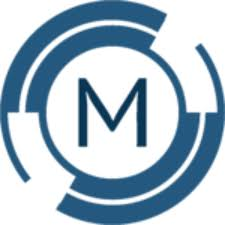

AGCO — Massey Ferguson
AlternanceApprenti Ingénieur — Amélioration continue & Performance industrielle
Beauvais · 2025 — Présent
🏭 L'entreprise
AGCO Corporation est un leader mondial de la conception, fabrication et distribution de machines agricoles. Le site de Beauvais (Massey Ferguson) est l'un des plus importants d'Europe pour la production de tracteurs en grande série.
🎯 Missions principales
- Analyse et optimisation des flux de production sur les lignes d'assemblage
- Animation de chantiers d'amélioration continue (Kaizen, 5S, PDCA)
- Étude préparatoire pour l'intégration de véhicules à guidage automatique (AGV)
- Mise en place du management visuel et standardisation des postes
- Formation et accompagnement des opérateurs aux nouvelles méthodes
- Suivi des indicateurs de performance et reporting à la hiérarchie
🔧 Compétences mobilisées
Lean Manufacturing
Kaizen
5S
PDCA
VSM
Chronoanalyse
Management visuel
KPI / SQCDP
Ergonomie
AGV
📊 Environnement
- Production grande série — cadence élevée
- Équipes pluridisciplinaires (production, qualité, logistique, méthodes)
- Travail terrain en bord de ligne et en salle de réunion
- Reporting régulier à la direction industrielle
📁 Projets associés

Metaflon
StageStagiaire Ingénieur — Méthodes, Qualité & Système d'information
Raccords & Flexibles industriels · 2024
🏭 L'entreprise
Metaflon est une PME industrielle spécialisée dans la fabrication et la distribution de raccords et flexibles pour l'industrie. Environnement à taille humaine avec des enjeux de structuration, de traçabilité et de qualité.
🎯 Missions principales
- Rédaction du cahier des charges pour la modernisation de l'ERP interne (GestProd — WinDev)
- Audit des processus métier par service (stocks, production, expédition, facturation)
- Modélisation CAO et migration des plans techniques sous SolidWorks
- Mise en place du système de métrologie et des procédures qualité (ISO 1502)
- Structuration de la traçabilité matière par numéro de coulée
- Organisation et étiquetage des zones de stockage
🔧 Compétences mobilisées
Cahier des charges
ERP / WinDev
SolidWorks
CAO 3D
Métrologie
ISO 1502
Traçabilité
Gestion des stocks
Qualité
Cartographie processus
📊 Environnement
- PME industrielle — structure à taille humaine
- Polyvalence : atelier, bureau d'études, gestion
- Contact direct avec la direction et les opérateurs
- Autonomie forte sur les projets confiés